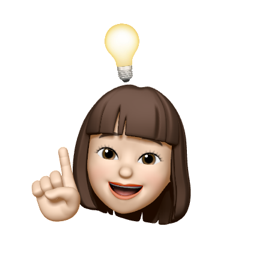

PORTFOLIO
Web Publisher

안녕하세요 제 이름은 김윤지 입니다!
웹 페이지에 구현하기 위한 최적의 방식을 생각하고,
웹 표준성과 접근성은 물론
감성과 신뢰성까지 충족시키는
디자인을 하는 진정한 웹 퍼블리셔가 되겠습니다.
UI/UX 사이트 리뉴얼 디자인 - 01

메이크업 브랜드 'hince'
기존 사이트를 리뉴얼하여 새롭게 디자인한 사이트 입니다. 힌스 사이트 리뉴얼에서는 힌스의 감성을 담은 무드 이미지를 적극적으로 활용하여 사이트에 머무는 것이 더 풍부하고 따뜻하게 느껴질 수 있도록 디자인을 하고자 합니다. 시선을 산만하게 하는 부분들을 최대한 없애면서 간결한 디자인으로 가독성과 판독성을 늘렸습니다.
- 작업기간: 2021.08 - 2021.09
- 기여도: 100%(개인 프로젝트)
- 사용툴: XD / Photoshop
UI/UX 사이트 리뉴얼 디자인 - 02

가방 및 악세사리 브랜드 'Fennec'
기존 사이트를 리뉴얼하여 새롭게 디자인한 사이트 입니다. 페넥은 미니멀한 스타일과 소비자 친화적 디자인을 필두로 클래식한 디자인과 기능성의 밸런스를 중요하게 생각하는 브랜드입니다. 페넥만의 톡톡튀는 컬러감을 살려 웹사이트의 메인페이지,상세페이지를 리뉴얼 디자인 하였습니다.
- 작업기간: 2021.09 - 2021.10
- 기여도: 100%(개인 프로젝트)
- 사용툴: XD / Photoshop
Thank you for watching
끝까지 봐주셔서 감사합니다.
포기하지 않고 끈기 있게 나아가는,
하나에 안주하지 않고 배우고자 하는 열정으로,
결과만큼의 과정도 중시하는 퍼블리셔가 될 것입니다.